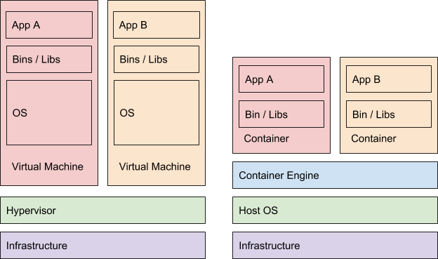

By the end of this cloud lab you should have a solid grasp on the tradeoffs and differences between Containers and VMs.
What you'll learn
- How to write a Dockerfile
- How to build a container
- How to run a container
- How to use the GCP Container Registry Service
- How Containers differ from Virtual machines
Prerequisites
- Google Cloud Platform Account and a Project with Billing
- Basic Linux Experience
Create a Project
To make cleanup easier, let's create a new google cloud project.
- Navigate to https://console.cloud.google.com.
- Click on the project selector dropdown
- Select Create Project
- Give it memorable name like, intro-to-containers
Launch CloudShell
To make cleanup easier, let's create a new google cloud project.
- Navigate to https://console.cloud.google.com.
- Click on the project selector dropdown
- Select Create Project
- Give it memorable name like, intro-to-containers
Now let's open the cloud shell. The cloud shell icon is at the top right:

A cloud shell session will open inside a new frame at the bottom of your browser.

Docker comes pre installed in cloud shell. If you ever want to see what version of docker is currently installed simply run the following command::
$ docker --version
Containers do not contain the base operating system, just the OS's libraries. Making a container much more lightweight compared to a VM. Running a container use less disk space and less CPU cycles compared to a VM while still isolating the application. For example the Alpine linux container is only 5MB in size.

Containers can easily be based off of other containers. In this learning we will build a container based off the node:7.2.0 container image.
Tools such-as docker and kubernetes give a good development to production story. Containers are faster and easier to build, and kubernetes allows you to have an easy way to manage your production services.
Dockerfiles include all the commands on how to build your container. The Dockerfile will tell Docker how to download dependencies, and build your application.
Let's dissect an example dockerfile:
Dockerfile
FROM ubuntu:latest
RUN apt-get install openjdk-8-jre
COPY server.jar /server.jar
ENV PORT=8080
CMD java -jar /server.jar
EXPOSE 8080FROM ubuntu:latest
This informs docker that the created image will be based upon the latest ubuntu LTS distribution. The ubuntu docker image will include all the default Ubuntu binaries such-as cp, ls, cat, and apt. Just like a VM you have a freedom to choose the underlying installed binaries. However the specific linux kernel running is specified by the host running the docker container.
Many programming languages keep their own base image repository. For example here are some base images for some popular programming languages. These images have the specified runtime pre-installed. Most allow you to specify latest to pull the latest version of the given runtime.
- Nodejs:
FROM node:4.4 - Golang:
FROM golang:1.6 - Java:
FROM java:openjdk-8 - PHP:
FROM php:7.0-apache - Python:
FROM python:3.5.2
RUN apt-get install openjdk-8-jre
The RUN instruction allows you to specify commands to be executed when building the image. You can have as many RUN commands as your heart desires, and they will be executed sequentially.
COPY server.jar /server.jar
The COPY instruction allows you to specify files to be copied when building the image. COPY is basically like a cp -R except it'll copy from your local machine to the docker image. So in this specific case we are copying our local ./server.jar to the docker image filesystem at /server.jar.
ENV PORT=8080
The ENV instruction specifies custom environment variables to be passed down to running applications. Think of this as a dynamic configuration for the program. For example cloud shell stores it's related project id in the environment variable DEVSHELL_PROJECT_ID. In your cloud type printenv, and you'll see a list of current environment variables.
CMD java -jar /server.jar
The CMD instruction specifies a default command to be executed when the container is run. Their can only be one CMD instruction. So in this case when our docker image is run a nodejs process running /server.js is started.
Expose 8080
The EXPOSE instruction informs the Docker runtime that there is some program listening to port 8080 in this container. This command does not make the exposed ports accessible to the host. To do so requires adding a command line argument when launching the docker container, such-as:
$ docker run -p <external port>:<exposed port> ...
server.js
"use strict";
let http = require('http');
let server = http.createServer((request, response) => {
console.log('Received request for URL: ' + request.url);
response.writeHead(200, {"Content-Type": "text/plain"});
response.end("Hello World\n");
});
server.listen(process.env.PORT);Copy and paste this file into your cloud shell:
- Copy the entire code snippet above (highlight, then
ctrl+c) - In your cloud shell run the command:
vim server.js - Click the
akey, then pressctrl-v. - Now click your
esckey, then typewqfollowed byenter.
This application will respond with Hello World! to all incoming http requests on port declared through the environment variable PORT.
Feel to test this nodejs application by running it on the cloud shell.
$ PORT=8000 node server.js & $ curl localhost:8000 Received request for URL: / Hello World
Now let's kill the nodejs application through the killall command:
$ killall node [1]+ Terminated PORT=8000 node server.js
Dockerfile
FROM node:7.2.0
COPY server.js /server.js
ENV PORT=8080
CMD node /server.js
EXPOSE 8080Copy and paste this file into your cloud shell using the exact same flow as before.
- Copy the entire code snippet above (highlight, then
ctrl+c) - In your cloud shell run the command:
vim Dockerfile - Click the
akey, then pressctrl-v. - Now click your
esckey, then typewqfollowed byenter.
Since we are using the nodejs runtime we'll use a pre-packaged image for nodejs applications.
Build the imCreating a Project
To make cleanup easier, let's create a new google cloud project.
Navigate to https://console.cloud.google.com.
Click on the project selector dropdown
Select Create Project
Give it memorable name like, intro-to-containers
age
Copy both the server.js and Dockerfile into a directory in your cloud shell.
For this step let's tag the image with the text `hello-node`.
$ docker build -t hello-world-node:v1 .
For more information about our recently built container you can run:
$ docker images hello-world-node
If you had a new release for the docker container, simply update the version number from v1 to say v2-alpha.
$ docker build -t hello-world-node:v2-alpha .
You'll notice that when you list your images you'll see both v1 and v2 for repository hello-world-node.
$ docker images hello-world-node REPOSITORY TAG IMAGE ID CREATED SIZE hello-world-node latest 3006039b4210 3 minutes ago 655.5 MB hello-world-node v1 3006039b4210 3 minutes ago 655.5 MB hello-world-node v2-alpha 3006039b4210 3 minutes ago 655.5 MB
In our dockerfile we exposed the port 8080 which the nodejs server is listening to. When we startup the image we have to map a port on the host which will map to our exposed docker port.
The following command will startup our hello-world-node:v1 image, run it in the background, keep a psudo terminal active, and route traffic from our host's port 8081 to the docker container's port 8080
$ docker run -i -t -d -p 8081:8080 hello-world-node:v1
Let's test our hello world service now and issue an HTTP GET request.
$ curl -X GET "localhost:8081" Hello World
You'll notice that if you try run curl localhost:8080 that an error will appear. This is due to the fact that you need to map ports from the docker host computer to the docker container. In this example we've mapped traffic from the docker host port 8081 to the container's port 8080.
In true unix fashion docker has a ps sub command. This command will dump all running docker containers and some of their metadata.
$ docker ps CONTAINER ID IMAGE COMMAND CREATED STATUS PORTS NAMES 490c7c793dc5 hello-world-node:v1 "/bin/sh -c 'node /se" 7 minutes ago Up 7 minutes 0.0.0.0:8081->8080/tcp elated_allen
For some fun go and spawn a bunch of instances of our hello-world-node:v2-alpha image.
$ docker run -i -t -d -p 8082:8080 hello-world-node:v2-alpha $ docker run -i -t -d -p 8083:8080 hello-world-node:v2-alpha $ docker run -i -t -d -p 8084:8080 hello-world-node:v2-alpha
Now when you run docker ps you'll find a bunch of containers. We can filter this list down by image name, for example to only view the running instances running the hello-world-node:v1 image you can issue the following:
$ docker ps --filter=image=hello-world-node:v1 CONTAINER ID IMAGE COMMAND CREATED STATUS PORTS NAMES 490c7c793dc5 hello-world-node:v1 "/bin/sh -c 'node /se" 7 minutes ago Up 7 minutes 0.0.0.0:8081->8080/tcp elated_allen
Getting a container's stdout
When viewing a container's logs we have to reference the container's id.
Let's get one from a running hello-world-node:v1 service:
$ docker ps --filter=image=hello-world-node:v1 -n=1 -l --format="{{.ID}}"
490c7c793dc5
To print out the logs of container 490c7c793dc5 we issue:
$ docker logs 490c7c793dc5
Google Container Registry (GCR) stores Docker container images on GCP for fast, scalable retrieval and deployment. You are only billed for storage and internet egress costs. GCR has Access Control List (ACL) support to protect who can access your docker images. By default only members of your GCP project can access a GCR docker image. |
Tag Naming Scheme
The GCR service requires uploaded images to have a image tag which adheres to the following format:
<host>/<project id>/<image name>:<version name>
The following hosts are offered:
- us.gcr.io hosts your images in the United States.
- eu.gcr.io hosts your images in the European Union.
- asia.gcr.io hosts your images in Asia.
- gcr.io without a prefix hosts your images in the United States, but this behavior may change in a future release. To home your data in a single specific location, we recommend specifying one of the localized hostnames. Note that gcr.io and us.gcr.io are not interchangeable in your commands.
- b.gcr.io can be used to push to existing Google Storage buckets.
Tagging an Image
Given the following information, this is how you'd tag your image for GCR. For your own testing please substitute my-awesome-project with your own gcp project id.
Host | Project Id | Image Name | Version |
us.gcr.io | my-awesome-project | hello-world-node | v1 |
This tag can be added at build
$ docker build -t us.gcr.io/my-awesome-project/hello-world-node:v1 .
Or it can be added to an existing image as well
$ docker tag hello-world-node:v1 us.gcr.io/my-awesome-project/hello-world-node:v1
Upload an image
Above we tagged our image us.gcr.io/my-awesome-project/hello-world-node which where our image will be hosted on the GCR service.
To upload the image we simply use the gcloud docker --push command:
$ gcloud docker --push us.gcr.io/my-awesome-project/hello-world-node:v1
You can make images public or change the default ACLs through the gsutil utility.
Download an image
Downloading is just like pushing an image. We simply substitute a --pull flag:
$ gcloud docker pull -- us.gcr.io/my-awesome-project/hello-world-node:v1
Cleanup
You are a container Expert now!
Delete the Project
To cleanup, we simply delete our project.
- In the navigation menu select IAM & Admin
- Then click on settings in the submenu
- Click on the trashcan icon with the text "Delete Project"
- Follow the prompts instructions
What we've covered
- How to write a Dockerfile
- How to build a container
- How to run a container
- How to use the GCP Container Registry Service
- How Containers differ from Virtual machines
Please spend a few seconds to give us some feedback to we can improve this learning.